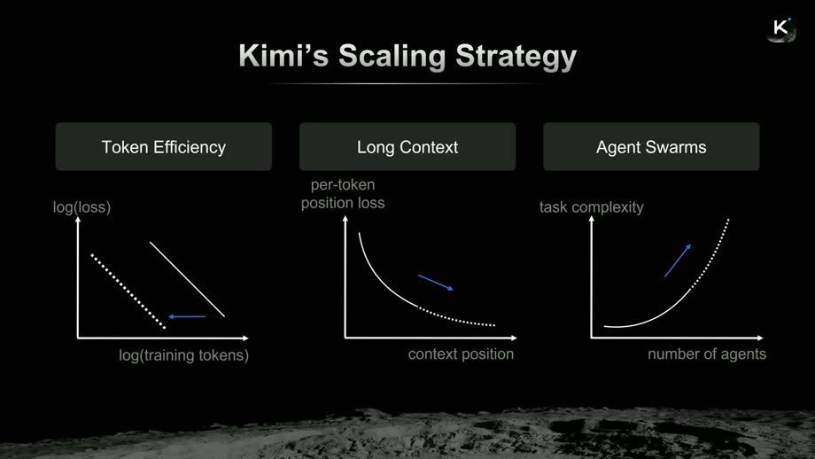
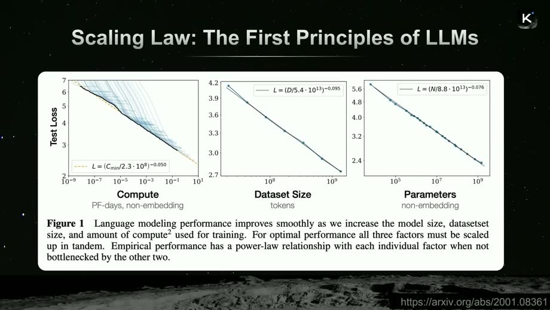
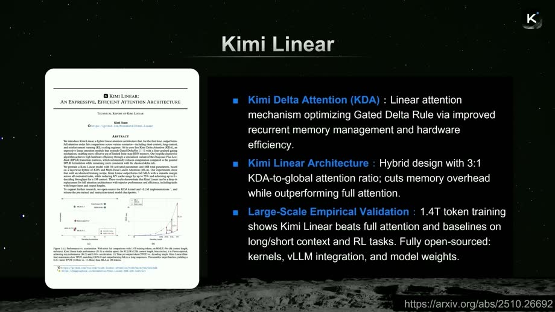
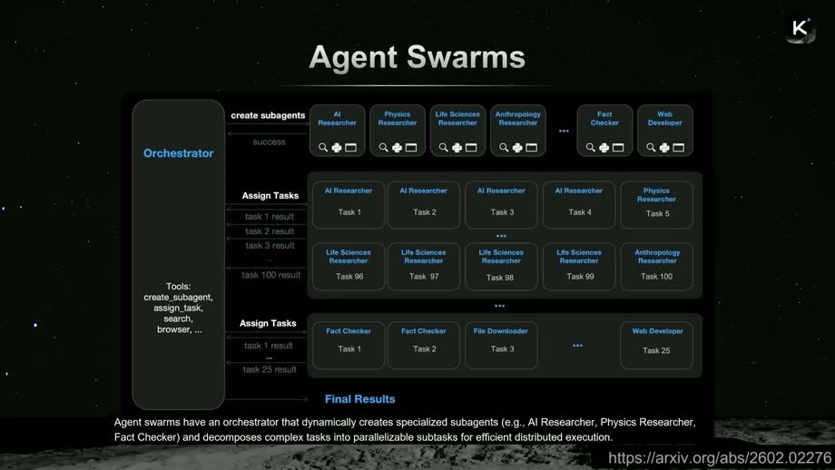
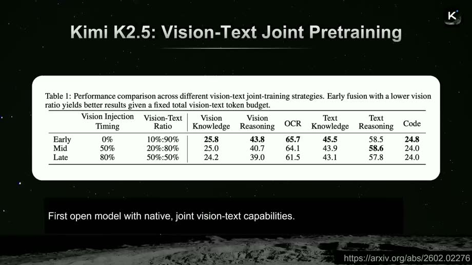
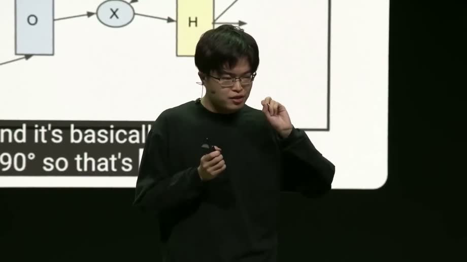

Interactive reading guide · Kimi open-model presentation
The talk is really about a scaling stack.
The presenter’s core move is not “make one giant model.” It is: compound several efficiency levers so open models get more capable per token, per context window, per agent, and per layer.
One sentence version
Open models reach frontier quality when scaling becomes multidimensional: better priors, longer working memory, parallel agents, multimodal pretraining, and redesigned architecture.
Token efficiencyShift the loss curve left: get more learning out of the same scarce high-quality data.
Long contextLet the model use more of the past, so hard tasks can unfold across larger codebases or trajectories.
Agent swarmsIncrease task capacity by decomposing work across specialized sub-agents.
Grounding: generated from the downloaded talk audio transcript and extracted slide frames. Some names in the auto-transcript are normalized, e.g. “agent swarms,” “Kimi K2.5,” “MuonClip.”

The opening slide frames the talk as three dimensions of scaling, then later adds multimodal pretraining and attention residuals.
Play with the argument
This is a teaching model, not a benchmark. Move the sliders and watch why one lever is not enough.
Compounded capability proxy
The talk repeatedly returns to this pattern: a small efficiency gain can matter because it multiplies with other gains at scale.
1.4×
stronger prior / token use
2.0×
working memory
4
parallel search paths
1.2×
layer efficiency
Relative search/capacity score13.4×
Current bottleneck: agents are still near single-agent mode; orchestration is not doing much yet.
Walk through the presentation

Lever 1 · better learning per token
Token efficiency is not just cheaper training. It raises the ceiling when high-quality data is scarce.
The speaker uses scaling laws to make a data-wall argument: if you only have a finite amount of high-quality data, a 2× token-efficiency improvement behaves like having much more data. This is why the talk treats optimizers like MuonClip as capability work, not mere infrastructure work.
Claim pattern: shift the loss curve left.
Technical snag: Muon-style training can create huge attention logits and divergence.
Fix presented: QK-Clip constrains query/key magnitudes while preserving training loss progress.
Mental model: “same tokens, better extraction.”

Lever 2 · longer useful memory
Kimi Linear tries to keep the long-context advantage of attention without paying full attention cost everywhere.
The talk contrasts Transformers with LSTMs: Transformers improve as the token index grows because they can use long-range context. Kimi Linear is presented as a way to scale that benefit more efficiently by mixing linear-attention layers with full-attention layers.
Kimi Delta Attention adds finer-grained decay to memory.
The recipe mixes linear attention and full attention, rather than replacing everything blindly.
The claimed target is strong short-context and long-context performance with better efficiency.
Mental model: “not all layers need the expensive memory mechanism.”

Lever 3 · parallel task capacity
Agent swarms make scaling about organization, not only model size.
The orchestrator decomposes tasks, assigns sub-agents, collects results, and can repeat. The analogy in the talk is a company: one CEO-like coordinator plus specialized roles. The real research problem is avoiding degenerate behavior.
Instantiation reward: prevent collapse back into a single serial agent.
Finish reward: prevent meaningless spawning where sub-tasks are opened but not completed.
Outcome reward: keep the whole system aligned to the final task.
Mental model: “scale the search process, but make the spawned work finishable.”

Integration · multimodal from day one
Kimi K2.5 is framed as early-fusion vision/text training, not vision bolted onto a text model.
The presentation argues that if vision and text are merged from the start, the modalities can share representation space and reinforce each other. The surprising claim is bidirectional transfer: vision tasks can improve text performance, and strong text training can improve vision after alignment.
Late fusion: add visual ability after a text base exists.
Early fusion: train vision and text together from the beginning.
The talk links this to emergent visual design and coding capabilities.
Mental model: “don’t attach eyes later; train the brain with eyes and language together.”

Next architecture · depth dimension
Attention residuals ask: what if depth had attention, not just fixed residual addition?
The talk borrows an analogy: residual connections are like an LSTM rotated 90 degrees, operating over depth instead of time. Attention residuals generalize that idea by attending over previous hidden states/layers, with block variants to reduce overhead.
Standard residual: combine the previous layer with the current layer’s transformation.
Attention residual: aggregate across multiple previous hidden states.
The speaker claims a 24% token-efficiency improvement in their scaling-law result.
Mental model: “make depth selective instead of blindly additive.”
The talk’s logic as a chain
MotiveOpen models should be greatOpenness matters because deployment and weights are accessible, but quality has to reach frontier level.
ConstraintData and compute are finiteScaling tokens helps, but high-quality data is scarce and long-context compute can be expensive.
MoveImprove each multiplierOptimizers, attention variants, agent orchestration, and modality fusion each shift one bottleneck.
ResultCapabilities compoundStable pretraining plus multiple efficiency gains can produce stronger models and new behaviors.
ClaimKeep scaling, but widerFuture scaling will add new dimensions; agent swarms are presented as one step, not the end.
Diagnose which lever matters
Pick a task. The artifact maps it to the presentation’s scaling dimensions.
Primary lever: long context + Kimi LinearA codebase task needs a model to keep many files, dependencies, and decisions in working memory without full-attention cost exploding.
Failure mode to watchIf context is long but retrieval/selection is poor, the model carries more tokens without using them well.
Retrieval check
1. Why does token efficiency matter beyond saving money?
2. What problem does the finish reward address in agent swarms?
3. What is the cleanest summary of attention residuals?
Source map and caveats
This artifact is a structured teaching interpretation of the presentation, based on the local audio transcript and selected slide screenshots. It does not independently verify every benchmark or performance claim; when numbers appear, they are presented as claims from the talk.
MuonClip / QK-ClipKimi Linearagent swarmsKimi K2.5 early fusionattention residuals